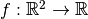
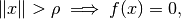
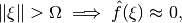
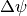
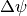
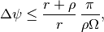
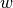

cone_beam_geometry¶
-
odl.tomo.geometry.conebeam.cone_beam_geometry(space, src_radius, det_radius, num_angles=None, short_scan=False, det_shape=None)[source]¶ Create a default fan or cone beam geometry from
space.This function is intended for simple test cases where users do not need the full flexibility of the geometries, but simply wants a geometry that works.
The geometry returned by this function has equidistant angles that lie (strictly) between 0 and either
2 * pi(full scan) orpi + fan_angle(short scan). The detector is centered around 0, and its size is chosen such that the wholespaceis covered with lines.The number of angles and detector elements is chosen such that the resulting sinogram is fully sampled according to the Nyquist criterion, which in general results in a very large number of samples. In particular, a
spacethat is not centered at the origin can result in very large detectors since the latter is always origin-centered.Parameters: - space :
DiscreteLp Reconstruction space, the space of the volumetric data to be projected. Must be 2- or 3-dimensional.
- src_radius : nonnegative float
Radius of the source circle. Must be larger than the radius of the smallest vertical cylinder containing
space.domain, i.e., the source must be outside the volume for all rotations.- det_radius : nonnegative float
Radius of the detector circle.
- short_scan : bool, optional
Use the minimum required angular range
[0, pi + fan_angle]. ForTrue, theparker_weightingshould be used in FBP. By default, the range[0, 2 * pi]is used.- num_angles : int, optional
Number of angles. Default: Enough to fully sample the data, see Notes.
- det_shape : int or sequence of ints, optional
Number of detector pixels. Default: Enough to fully sample the data, see Notes.
Returns: - geometry :
DivergentBeamGeometry Projection geometry with equidistant angles and zero-centered detector as determined by sampling criteria.
- If
spaceis 2D, the result is aFanFlatGeometry. - If
spaceis 3D, the result is aConeFlatGeometry.
- If
Notes
According to [NW20010], pages 75–76, a function  that has compact support

and is essentially bandlimited

can be fully reconstructed from a fan beam ray transform with source-detector distance
 (assuming all detector
points have the same distance to the source) if (1) the projection
angles are sampled with a spacing of  such that
(assuming all detector
points have the same distance to the source) if (1) the projection
angles are sampled with a spacing of  such that
and (2) the detector is sampled with an angular interval
 that satisfies
that satisfiesFor a flat detector, the angular interval is smallest in the center of the fan and largest at the boundaries. The worst-case relation between the linear and angular sampling intervals are
where  is the width of the detector. Thus, to satisfy the angular detector condition one can choose
The geometry returned by this function satisfies these conditions exactly.
If the domain is 3-dimensional, a circular cone beam geometry is created with the third coordinate axis as rotation axis. This does, of course, not yield complete data, but is equivalent to the 2D fan beam case in the slice. The vertical size of the detector is chosen such that it covers the object vertically with rays, using a containing cuboid to compute the cone angle.
References
[NW20010] (1, 2) Natterer, F and Wuebbeling, F. Mathematical Methods in Image Reconstruction. SIAM, 2001. https://dx.doi.org/10.1137/1.9780898718324 Examples
Create a fan beam geometry from a 2d space:
>>> space = odl.uniform_discr([-1, -1], [1, 1], (20, 20)) >>> geometry = cone_beam_geometry(space, src_radius=5, det_radius=5) >>> geometry.angles.size 78 >>> geometry.detector.size 57
For a short scan geometry (from 0 to
pi + fan_angle), theshort_scanflag can be set, resulting in a smaller number of angles:>>> geometry = cone_beam_geometry(space, src_radius=5, det_radius=5, ... short_scan=True) >>> geometry.angles.size 46
If the source is close to the object, the detector becomes larger due to more magnification:
>>> geometry = cone_beam_geometry(space, src_radius=3, det_radius=9) >>> geometry.angles.size 80 >>> geometry.detector.size 105
- space :